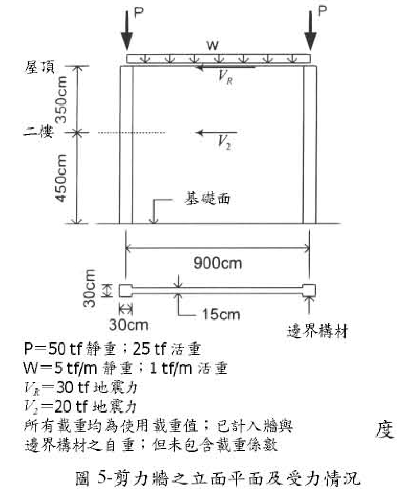
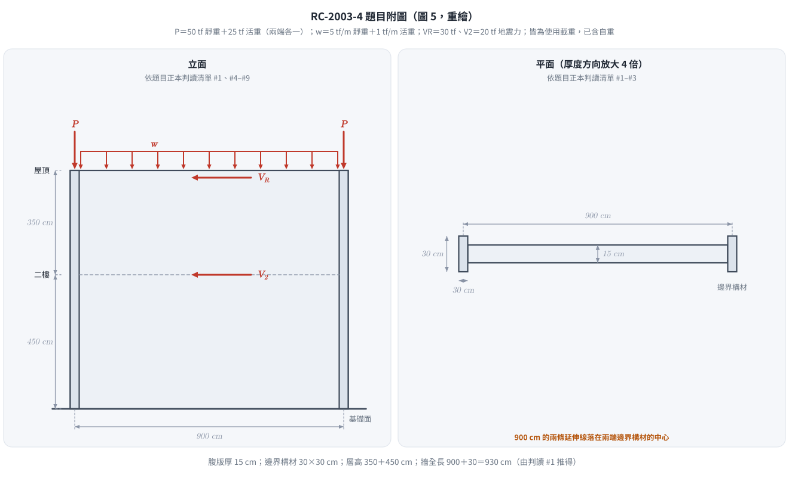
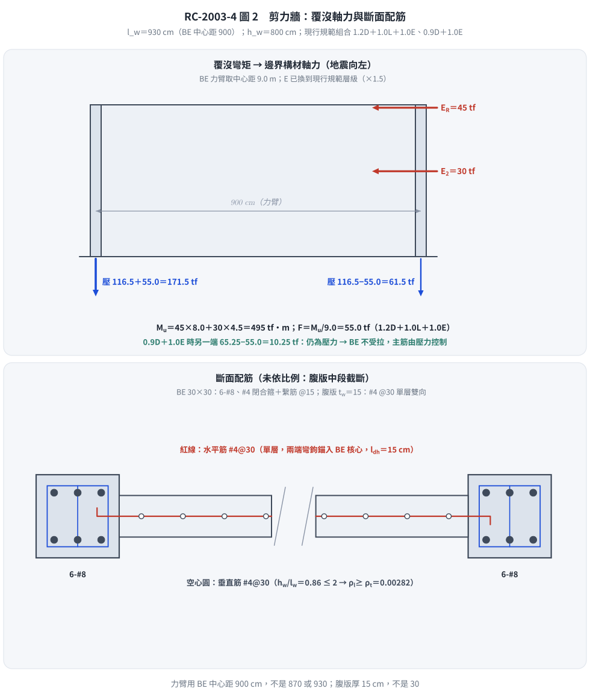

📄 題目正本：考卷原文・附圖・判讀清單（已確認）
RC-2003-4 題目正本
本檔只記錄考卷上寫了什麼、圖上畫了什麼，不含任何解法。解析見同資料夾
RC-2003-4.md。
判讀清單已經使用者確認（凍結）；本檔原則上不再修改（改動須回考卷原圖並記 log）。
| 項目 | 內容 |
|---|---|
| 考卷 | raw/exams/RC-2003_鋼筋混凝土設計與預力.pdf 第 1 頁（掃描影像，正面＋背面同一頁），背面第四題 |
| 考年 | 民國 92 年（2003） |
| 配分 | 40 分 |
| 附圖 | RC-2003-4-fig-2.png（圖 5：剪力牆之立面平面及受力情況；2026-11-14 由考卷重新擷取）；既有 RC-2003-4-fig-1.png 為同一圖，基礎面附近壓有滑鼠游標，保留不刪 |
| 判讀狀態 | 已確認（2026-11-14 使用者確認；影響答案項目使用者選擇：#1 900 為邊界構材中心距（l_w＝930）、#4 層高 350＋450、#6 兩端各一 P（50 靜＋25 活）；腹版厚 15、屋頂 w 一併採用；轉錄 2026-11-14；PyMuPDF 110 dpi 全頁目視，附圖 300–400 dpi 局部放大（掃描原生約 96 dpi）；盲讀後才比對既有解析） |
1. 考卷原文（逐字）
四、有一兩層樓高作耐震用之鋼筋混凝土剪力牆如圖 5 所示，試按民國 92 年 1 月 1 日生效，由營建雜誌社發行之「結構混凝土設計規範」來設計剪力牆之鋼筋配置。（40 分）
已知條件：
㈠ $f'_c = 280\ kgf/cm^2$，常重混凝土
㈡ $f_y = 4{,}200\ kgf/cm^2$
㈢ 作用在剪力牆之使用載重如圖 5 所示
㈣ 控制設計之載重組合為 $U = 0.9D \pm 1.43E$ 及 $U = 0.75(1.4D + 1.7L \pm 1.87E)$ 兩種
㈤ 邊界構材之縱向主筋限用 #8 鋼筋，$d_b = 2.54cm$，$A_b = 5.07cm^2$
㈥ 邊界構材之橫向箍筋限用 #4 鋼筋，$d_b = 1.27cm$，$A_b = 1.27cm^2$
㈦ 剪力牆之水平暨垂直剪力鋼筋限用 #4 鋼筋，如果規範允許（$V_u \le 0.53\sqrt{f'_c}A_{cv}$），則剪力牆優先採用單層鋼筋網
㈧ 剪力牆之剪力設計可採〔掃描缺字〕$\phi = 0.6$ 之值，以求簡便
欲求：1. 設計邊界構材之縱向主筋與箍筋之配置；
2. 設計剪力牆腹版之水平剪力鋼筋配置，並檢查水平剪力鋼筋在邊界構材內之錨定情況（彎鉤錨定長度 $\lambda_{dh} = 0.06 f_y d_b / \sqrt{f'_c}$）〔照考卷原文，符號印為 λ〕；
3. 設計剪力牆腹版之垂直剪力鋼筋配置，並檢查〔掃描缺字〕據以調整之；
4. 繪製剪力牆之斷面圖並詳示鋼筋配置之設計結果。
註：㈧與欲求 3. 的行中有字被掃描吃掉；圖 5 右側另有一個孤立的「度」字，應屬缺字的一部分，無法還原。
2. 考卷給的公式、附表與參數
- 題文數值：見上；載重組合兩種；剪力 $\phi = 0.6$；單層鋼筋網條件 $V_u \le 0.53\sqrt{f'_c}A_{cv}$；彎鉤錨定長度 $0.06 f_y d_b/\sqrt{f'_c}$。
- 圖 5 載重表（照錄）：
P＝50 tf 靜重；25 tf 活重、W＝5 tf/m 靜重；1 tf/m 活重、VR＝30 tf 地震力、V2＝20 tf 地震力、所有載重均為使用載重值；已計入牆與邊界構材之自重；但未包含載重係數。 - 沒有給：牆與邊界構材的保護層、邊界構材以外的軸向 $\phi$、牆是否需特殊邊界構材的判定方法（題目直接說有邊界構材）。
- 卷首注意事項：㈠不必抄題，作答時請將試題題號及答案依照順序寫在試卷上，於本試題上作答者，不予計分。㈡可以使用電子計算器，但需詳列解答過程。
3. 附圖

圖面文字照錄：P、P、w、屋頂、VR、350cm、二樓、V2、450cm、基礎面、900cm、30cm（邊界構材深）、30cm（邊界構材寬）、15cm、邊界構材、載重表五行（見 §2）、圖 5-剪力牆之立面平面及受力情況。
4. 判讀清單
「把握」標不確定者請優先確認；解讀類項目（題目用字的意思）另標「解讀」。
| # | 項目 | 判讀 | 圖上／題文依據 | 把握 |
|---|---|---|---|---|
| 1 | 900 cm 量測基準 | 900 cm 為兩端邊界構材中心距；牆全長 $l_w = 900 + 30 = 930$ cm | 平面圖 900cm 尺寸線兩端延伸線分別落在左右邊界構材正中（400 dpi：左邊界構材 x≈388–430、延伸線 x≈408；右邊界構材 x≈990–1028、延伸線 x≈1008）；立面 900 延伸線同樣落在兩根邊界構材柱的中線。圖未依比例（邊界構材畫得偏大），只能看延伸線落點 | 確定（解讀）（影響答案）；使用者確認 |
| 2 | 腹版厚 | $t_w = 15$ cm | 平面圖 15cm 兩支箭頭夾腹版上下緣 |
確定 |
| 3 | 邊界構材 | 兩端各一，$30 \times 30$ cm | 平面圖 30cm（深）、30cm（寬）、邊界構材 指示線 |
確定 |
| 4 | 層高 | 屋頂至二樓 350 cm、二樓至基礎面 450 cm；牆總高 $h_w = 800$ cm | 立面左側兩段尺寸線，二樓 標在兩段交點 |
確定（影響答案）；使用者確認 |
| 5 | 地震力 | $V_R = 30$ tf 作用於屋頂（距基礎面 800 cm）、$V_2 = 20$ tf 作用於二樓（450 cm），同向（向左） | 立面箭頭；載重表 | 確定 |
| 6 | 集中載重 P | 兩端各一個 P（作用於邊界構材頂），每個 P＝50 tf 靜重＋25 tf 活重 | 立面兩支 P 箭頭各在一端邊界構材上方；載重表 |
確定（解讀）（影響答案）；使用者確認 |
| 7 | 均佈載重 w | 屋頂梁版上全長均佈，$w$＝5 tf/m 靜重＋1 tf/m 活重 | 立面 w 箭頭橫跨兩 P 之間；載重表 | 確定 |
| 8 | 自重 | 載重表聲明已計入牆與邊界構材自重；所有載重為使用載重（未乘係數） | 載重表末兩行 | 確定 |
| 9 | 基礎 | 牆底在「基礎面」，視為固定於基礎 | 立面 基礎面 指示線 |
確定（解讀） |
| 10 | 所求 | 1. 邊界構材縱筋與箍筋；2. 腹版水平剪力筋＋其在邊界構材內錨定；3. 腹版垂直剪力筋＋〔缺字〕檢查並調整；4. 斷面配筋圖 | 題文欲求 1–4 | 確定 |
| 11 | 考卷沒有給 | 保護層；欲求 3.「並檢查」的對象（掃描缺字） | 全題 | 確定 |
轉錄：2026-11-14（RC-U3-3 題目正本推廣・批 1）
確認：2026-11-14 使用者確認（RC-U3-3 題目正本推廣・批 1，關卡一）
考題編號：RC-2003-4
主分類： RC-U3-3 韌性要求與耐震設計
副分類： RC-U2-1 RC 剪力強度分析與設計
設計法： USD
標籤： 剪力牆 邊界構材 水平剪力筋 垂直剪力筋 覆沒力矩 αc係數 φ=0.6 單層配筋 彎鉤錨定 兩層樓高 尺寸鏈判讀 邊界構材中心距 腹版厚15 層高350+450
1. 題目（考卷原文見題目正本）
考卷原文、公式／附表、附圖與判讀清單（已確認）見
RC-2003-4-problem.md。本節只列解題時最容易讀錯的地方與本解使用的記號；題意以題目正本為準。

重繪自考卷圖 5，依題目正本判讀清單 #1–#8。本圖攔下四個讀錯：腹版厚 15 cm（30 是邊界構材）、上層 350 下層 450、兩端各有一個 P、900 量到邊界構材中心。
常見誤讀
| 項目 | 正確判讀 | 常見誤讀 |
|---|---|---|
| 腹版厚 | $t_w=15$ cm | 30 cm（把邊界構材尺寸當牆厚；本庫舊解） |
| 層高 | 屋頂–二樓 350、二樓–基礎面 450，$h_w=800$ cm | 每層 450、總高 900（本庫舊解） |
| 900 cm | 兩邊界構材中心距（力臂 9.0 m），牆全長 $l_w=930$ cm | 牆全長 900、力臂 870（本庫舊解） |
| 集中載重 P | 兩端各一個，每個 50 tf 靜＋25 tf 活 | 合計 50 tf、每端 25 tf，且漏活載（本庫舊解） |
| 均佈載重 w | 屋頂全長 5 tf/m 靜＋1 tf/m 活，要計入 | 忽略（本庫舊解） |
| 用途 | 「作耐震用」 | 「作廚房用」（舊解誤植） |
本解記號： 每端邊界構材（BE）承受的使用載重：$D_{BE}$、$L_{BE}$；考卷地震力 $V_R$、$V_2$（使用值）；換算後的現行規範地震力 $E$（$\alpha_y=1.0$ 層級）；$F=M_u/9.0$ 為覆沒彎矩在 BE 引起的軸力；$A_{cv}=t_wl_w$。
規範（依根目錄 CLAUDE.md「規範版本」）： 一律依現行建築物混凝土結構設計規範（2023 年版，對應土木 401-112／ACI 318-19 體系）。考卷印出的舊載重組合 $U=0.9D\pm1.43E$、$U=0.75(1.4D+1.7L\pm1.87E)$、剪力 $\phi=0.6$ 與彎鉤式 $\lambda_{dh}=0.06f_yd_b/\sqrt{f'_c}$ 不照用，改用現行規範；照考卷式子的結果列於 §5 對照。
| 項目 | 本解採用（現行規範） | 考卷印出（舊規範） |
|---|---|---|
| 載重組合 | $1.4D$；$1.2D+1.6L$；$1.2D+1.0L+1.0E$；$0.9D+1.0E$ | $0.9D\pm1.43E$；$0.75(1.4D+1.7L\pm1.87E)$ |
| 地震力 E | 考卷值 ×1.5（$\alpha_y$ 1.5 → 1.0）：$V_R=45$、$V_2=30$ tf | $V_R=30$、$V_2=20$ tf |
| 壓力構材 $\phi$ | 0.65（橫箍） | — |
| 剪力 $\phi$ | 0.75（剪力非控制；見 Step 4） | 0.6 |
| 彎鉤伸展長度 | ACI 318-19 式 25.4.3.1 | $0.06f_yd_b/\sqrt{f'_c}$ |
地震力讀法（使用者確認，2026-11-14）： 現行 RC 規範的組合 $1.2D+1.0L+1.0E$ 中，E 為耐震規範設計地震力且起始降伏放大倍數 $\alpha_y$ 取 1.0；考卷給的 30／20 tf 屬舊規範 RC 極限強度設計的層級（$\alpha_y=1.5$，配 1.43／1.87 係數），故換算 $E=1.5\times$ 考卷值。考卷未寫 $\alpha_y$，此為依當年慣例的推論；直接當 E（讀法 A）的結果列於 §5。
2. 考題核心精神與出題者意圖
核心觀念： 耐震剪力牆由三部分組成——邊界構材承擔重力與覆沒彎矩造成的軸力並須圍束，腹版水平筋抵抗剪力且須錨入邊界構材，腹版垂直筋配合水平筋配置。
出題者測驗：
- 讀圖：牆厚、層高、力臂、載重的作用位置
- 載重組合各自控制什麼（最大壓力、最小壓力或拉力）
- 邊界構材主筋與箍筋
- 單層鋼筋網的條件、最小鋼筋比、最大間距
- 水平筋彎鉤錨定
- $h_w/l_w\le2$ 時垂直筋比不小於水平筋比
3. 解題戰略地圖與陷阱分析
計算步驟：
- 幾何：$l_w$、$h_w$、$A_{cv}$、力臂
- 地震力換到現行規範層級；每端 BE 的使用軸力
- 現行載重組合下 $V_u$、$M_u$、BE 軸力
- 特殊邊界構材需求（應力法）→ BE 主筋與箍筋
- 腹版水平筋：雙層判定 → $\phi$ 判定 → $\phi V_n$、$\rho_{min}$、間距 → 錨定
- 腹版垂直筋：$\rho_l\ge\rho_t$
- 斷面配筋圖
關鍵陷阱：
| # | 陷阱 | 說明 |
|---|---|---|
| ① | 牆厚讀成 30 | 30×30 是邊界構材；腹版 15 cm |
| ② | 層高讀成 450＋450 | 上層 350，屋頂地震力力臂 8.0 m |
| ③ | 力臂扣兩次 | 900 已經是 BE 中心距 |
| ④ | P 只算一個 | 兩端各一個 P，另有屋頂 w |
| ⑤ | 照抄考卷舊組合 | 現行規範用 $1.2D+1.0L+1.0E$、$0.9D+1.0E$，E 須在 $\alpha_y=1.0$ 層級 |
| ⑥ | 4-#8 看起來夠 | $\phi=0.65$、0.80 上限下 4-#8 只有 153 tf，要 6-#8 |
| ⑦ | 套特殊邊界構材的 $A_{sh}$ | 應力 < $0.2f'_c$，不需特殊邊界構材；改依一般邊界規定（間距 $\le6d_b$、15 cm） |
3.5 變數層次分析（Variable Hierarchy Analysis）
複習提示：第一次解題後，在每個卡住的知識點旁標記
⚠；第二次複習時只看有⚠的項目。
最終目標
BE 主筋與箍筋、腹版水平筋（含錨定）、腹版垂直筋、斷面配筋圖。
本題關鍵公式（依計算順序）
$$\text{Step 1: } E=1.5\times(V_R,V_2),\quad M_u=E_R\cdot8.0+E_2\cdot4.5,\quad A_{cv}=t_w\,l_w$$
$$\text{Step 2: } P_{BE}=(1.2D_{BE}+1.0L_{BE})\pm\frac{\boxed{M_u}}{9.0},\qquad 0.9D_{BE}-\frac{M_u}{9.0}$$
$$\text{Step 3: } P_{BE,max}\le0.80\phi\left[0.85f'_c(A_g-A_{st})+f_yA_{st}\right],\ \phi=0.65$$
$$\text{Step 4: } \phi V_n=\phi A_{cv}\left(\alpha_c\sqrt{f'_c}+\rho_tf_y\right)\ge V_u,\quad\rho_t\ge0.0025,\ s\le45\text{ cm}$$
$$\text{Step 5: } \rho_l\ge\rho_t\ (h_w/l_w\le2)$$
L1：題目直接給定
| 符號 | 數值 | 說明 |
|---|---|---|
| $t_w$ | 15 cm | 腹版厚（判讀 #2） |
| BE | 30×30 cm | 兩端（判讀 #3） |
| BE 中心距 | 900 cm | 判讀 #1 → $l_w=930$ |
| 層高 | 350＋450 cm | 判讀 #4 → $h_w=800$ |
| $P$ | 每端 50 tf 靜＋25 tf 活 | 判讀 #6 |
| $w$ | 5 tf/m 靜＋1 tf/m 活 | 判讀 #7 |
| $V_R$、$V_2$ | 30、20 tf（使用值） | 屋頂（800 cm）、二樓（450 cm） |
L2：需知識點推導
| 符號 | 公式／來源 | 卡關? |
|---|---|---|
| $E_R$、$E_2$ | $1.5\times30=45$、$1.5\times20=30$ tf | |
| $D_{BE}$、$L_{BE}$ | 72.5、29.5 tf | |
| $V_u$、$M_u$ | 75 tf、495 tf·m | |
| $P_{BE}$ | 最大 171.5 tf；最小 10.25 tf（壓，無拉力） | |
| BE 主筋 | 需 $A_{st}\ge29.18$ cm² → 6-#8（30.42 cm²） | |
| BE 箍筋 | #4 閉合箍＋#4 繫筋 @15 cm | |
| $A_{cv}$ | 13,950 cm² | |
| 水平筋 | #4 單層 @30 cm，$\rho_t=0.00282$ | |
| $l_{dh}$ | 15 cm（下限控制）< BE 核心 24.73 cm | |
| 垂直筋 | #4 單層 @30 cm，$\rho_l=0.00282$ |
L3：深層知識（不懂就卡住）
| 知識點 | 說明 | 卡關? |
|---|---|---|
| E 的層級 | 現行 RC 組合用 1.0E，E 須以 $\alpha_y=1.0$ 計算；舊規範 RC 以 $\alpha_y=1.5$ 配 1.43／1.87 係數 | |
| 特殊邊界構材判定 | 應力法：極端纖維壓應力 $>0.2f'_c$ 才需特殊邊界構材（$h_w/l_w<2$ 不適用位移法） | |
| 剪力 $\phi$ | 0.60 只用於剪力強度低於撓曲強度對應剪力（剪力控制）時；否則 0.75 | |
| 單層網條件 | $V_u\le0.53\sqrt{f'_c}A_{cv}$ 且 $h_w/l_w<2$ 才可單層 | |
| 垂直筋比 | $h_w/l_w\le2$ 時 $\rho_l\ge\rho_t$ |
4. 步驟化詳細計算過程
Step 1 幾何、使用載重與地震力換算
$$l_w=900+30=930\ \text{cm},\qquad h_w=350+450=800\ \text{cm},\qquad \frac{h_w}{l_w}=0.86$$
$$A_{cv}=t_wl_w=15\times930=\boxed{13{,}950\ \text{cm}^2}$$
每端 BE 的使用軸力（P 作用於 BE，w 各分一半；自重已含）：
$$D_{BE}=50+5\times4.5=72.5\ \text{tf},\qquad L_{BE}=25+1\times4.5=29.5\ \text{tf}$$
地震力換到現行規範層級（$\alpha_y$ 1.5 → 1.0）：
$$E_R=1.5\times30=45\ \text{tf},\quad E_2=1.5\times20=30\ \text{tf}$$
$$V_u=45+30=\boxed{75\ \text{tf}},\qquad M_u=45\times8.0+30\times4.5=\boxed{495\ \text{tf·m}}$$
Step 2 載重組合與 BE 軸力
覆沒軸力 $F=M_u/9.0=495/9.0=55.0$ tf。
| 組合 | 每端 BE 重力軸力 | 加減 $F$ 後 |
|---|---|---|
| $1.4D$ | 101.5 | — |
| $1.2D+1.6L$ | 134.2 | — |
| $1.2D+1.0L+1.0E$ | 116.5 | 171.5（最大壓） |
| $0.9D+1.0E$ | 65.25 | 10.25（最小，仍為壓力） |
→ BE 由壓力控制，不受拉。（活載重係數取 1.0；題目未給用途，不採 0.5L 折減。）
Step 3 邊界構材
特殊邊界構材需求（應力法）：全牆斷面 $A=14{,}850$ cm²、$I=1.188\times10^9$ cm⁴，
$$f_c=\frac{2\times116.5\times10^3}{14{,}850}+\frac{495\times10^5\times465}{1.188\times10^9}=35.1\ \text{kgf/cm}^2<0.2f'_c=56$$
→ 不需特殊邊界構材；依一般邊界規定配置。題目已配置 30×30 BE，主筋以「承擔重力＋覆沒軸力的短柱」設計。
主筋（橫箍，$\phi=0.65$，上限 0.80）：
$$171{,}500\le0.80\times0.65\left[0.85\times280\times(900-A_{st})+4200A_{st}\right]\ \Rightarrow\ A_{st}\ge29.18\ \text{cm}^2$$
- 4-#8（20.28 cm²）：$\phi P_{n,max}=153.2$ tf < 171.5 ✗
- 6-#8（30.42 cm²）：$\phi P_{n,max}=\boxed{174.1\ \text{tf}}\ge171.5$ ✓（利用率 0.985），$\rho_g=3.38\%$
- 排列：相對兩面各 3 根，淨距 5.92 cm $\ge1.5d_b$ ✓（保護層 4 cm 為假設）
橫向鋼筋（一般邊界規定）： 邊界縱筋比 $3.38\%>2.8/f_y(\text{MPa})=0.67\%$ → 邊界橫向鋼筋須照柱的閉合箍＋繫筋形式配置（$h_x\le35$ cm），間距：
- 臨界範圍 $\max(l_w,\ M_u/4V_u)=\max(930,\ 165)=930$ cm（涵蓋全高 800 cm）內：$s\le\min(6d_b,\ 15)=\min(15.2,\ 15)=\boxed{15\ \text{cm}}$
- （臨界範圍外上限 $\min(8d_b,\ 20)=20$ cm；本題全高皆在臨界範圍內）
$$\therefore\ \text{BE：6-\#8；\#4 閉合箍＋\#4 繫筋（勾住中間主筋）@ 15 cm，全高}$$
Step 4 腹版水平剪力筋
單層或雙層：
$$0.53\sqrt{f'_c}A_{cv}=0.53\times16.733\times13{,}950=123.7\ \text{tf}\ \ge V_u=75\ \text{tf},\quad h_w/l_w=0.86<2\ \Rightarrow\ \text{可單層}$$
最小鋼筋比： $V_u=75>0.27\sqrt{f'_c}A_{cv}=63.0$ tf → $\rho_t\ge0.0025$、$s\le45$ cm。
$$s\le\frac{1.27}{0.0025\times15}=33.9\ \text{cm}\ \Rightarrow\ \text{採 \#4 單層 @ 30 cm},\quad\rho_t=0.00282$$
標稱強度與 $\phi$：（$h_w/l_w\le1.5$，$\alpha_c=0.80$）
$$V_n=13{,}950\times(0.80\times16.733+0.00282\times4200)=\boxed{352.1\ \text{tf}}\ \le2.12\sqrt{f'_c}A_{cv}=494.9\ \text{tf}$$
撓曲強度對應剪力（BE 6-#8 力臂 9.0 m，計入 $0.9D$ 軸壓，近似）：$M_n\approx1737$ tf·m → $V_{@M_n}=1737\times75/495=263$ tf < $V_n$ → 非剪力控制，$\phi=0.75$。
$$\phi V_n=0.75\times352.1=\boxed{264.1\ \text{tf}}\ \ge V_u=75\ \text{tf}\quad\checkmark$$
（$h_w/l_w\le1.5$，剪力放大係數 $\Omega_v=1.0$，$V_e=V_u$。）
水平筋錨入 BE（標準彎鉤，ACI 318-19 式 25.4.3.1 換算；$\psi_e=1.0$，$\psi_r=1.0$（彎鉤筋間距 30 cm $\ge6d_b$），$\psi_o=1.0$（彎鉤止於 BE 核心內），$\psi_c=0.866$）：
$$l_{dh}=\frac{f_y\psi_e\psi_r\psi_o\psi_c}{23\lambda\sqrt{f'_c}}d_b^{1.5}\ (\text{SI})=13.4\ \text{cm}\ \Rightarrow\ \max(13.4,\ 8d_b=10.2,\ 15)=\boxed{15\ \text{cm}}$$
BE 核心內可用長度 $30-4-1.27=24.73$ cm $\ge15$ cm ✓；水平筋以標準彎鉤勾住 BE 遠側主筋。
Step 5 腹版垂直剪力筋
$h_w/l_w=0.86\le2.0$ → $\rho_l\ge\rho_t=0.00282$ → #4 單層 @ 30 cm ✓。
並檢查、據以調整：
- BE 主筋：4-#8 不足 → 調整為 6-#8（Step 3）
- BE 箍筋：不需特殊邊界構材的 $A_{sh}$，由間距 $\le15$ cm 控制
- 腹版筋：$\rho_{min}$ 控制，@30 cm 滿足 $\le45$ cm 與 $\phi V_n\ge V_u$
Step 6 設計結果與斷面配筋圖
| 構件 | 設計結果 |
|---|---|
| 邊界構材主筋 | 6-#8（每端，相對兩面各 3 根），$\rho_g=3.38\%$ |
| 邊界構材箍筋 | #4 閉合箍＋#4 繫筋 @ 15 cm，全高 |
| 腹版水平筋 | #4 單層 @ 30 cm，$\rho_t=0.00282$，兩端標準彎鉤錨入 BE 核心（$l_{dh}=15$ cm） |
| 腹版垂直筋 | #4 單層 @ 30 cm，$\rho_l=0.00282$ |

圖 2 剪力牆覆沒軸力與斷面配筋。力臂取 BE 中心距 900 cm、腹版厚 15 cm；本圖攔下「力臂取 870 或 930」「BE 被當成受拉」「腹版厚讀成 30」與「垂直筋少於水平筋」。
5. 關鍵爭議點與進階探討
1. 地震力層級的兩種讀法（主線 B，使用者確認）
| 量 | A：考卷值直接當 E（30／20） | B：×1.5 換到 $\alpha_y=1.0$（45／30） | 照考卷舊組合（參考） |
|---|---|---|---|
| $V_u$ | 50.0 tf | 75.0 tf | 71.5 tf |
| $M_u$ | 330 tf·m | 495 tf·m | 471.9 tf·m |
| BE 最大壓力 | 153.2 tf | 171.5 tf | 165.2 tf |
| BE 最小軸力 | 28.6 tf 壓 | 10.25 tf 壓 | 12.8 tf 壓 |
| BE 主筋（$\phi$ 0.65） | 4-#8 的 $\phi P_{n,max}$＝153.2 tf 與需求幾乎相等，取 6-#8 | 6-#8 | 6-#8 |
B 與考卷原意（舊組合的地震需求）只差約 5%；A 的剪力需求少三成。兩種讀法配筋結果相同。
2. 照考卷印出的舊式子會怎樣
- 舊組合下 BE 最大壓力 165.2 tf、$V_u=71.5$ tf，與主線相近。
- 考卷 $\phi=0.6$：$\phi V_n=211.3$ tf，仍遠大於需求；腹版配筋不變。
- 考卷彎鉤式 $0.06f_yd_b/\sqrt{f'_c}=19.1$ cm，比現行式（15 cm）長，同樣 < 24.73 cm。
- 舊規範的邊界構材以柱的 $A_{sh}$ 圍束（#4 箍＋繫筋 @7.5 cm）；現行規範在不需特殊邊界構材時改由間距控制（@15 cm）。
3. 為什麼腹版筋由最小量控制
矮牆（$h_w/l_w<1.5$）混凝土貢獻大，$\phi V_c=0.75\times13{,}950\times0.80\times16.733=140$ tf 已大於 $V_u$；配筋由 $\rho_{min}=0.0025$ 與間距上限決定。
4. 規範條文核對
本解的條文對應 ACI 318-19（土木 401-112 體系）：載重組合、特殊邊界構材應力法（$0.2f'_c$）、一般邊界橫向鋼筋（縱筋比 $>2.8/f_y$ 時間距 $\le6d_b$、15 cm）、剪力 $\phi$、$\alpha_c$、單層網條件、彎鉤伸展長度（SI 式換算為 cm）。作答時請以「建築物混凝土結構設計規範」2023 年版條文編號引用。
修正日期：2026-11-14（§1 改為指向題目正本；重繪題目附圖 figs/RC-2003-4-fig-1-problem.svg）
修正日期：2026-11-14（題意（判讀）勘誤，整題重解：腹版厚 30 → 15 cm、層高 450＋450 → 350＋450、P 為兩端各 50 靜＋25 活並計入屋頂 w、900 為邊界構材中心距（l_w＝930）（題目正本 #1–#7，使用者確認）；BE 最大壓力 84.5 → 165.16 tf、BE 由受拉改為只受壓、BE 主筋 4-#8 → 6-#8、腹版筋 #4@15 → #4@30、壓力構材 φ 改 0.70；驗證：verify_RC-2003-4.py 重算 37 值 MISMATCHES: 0，BE 主筋以反解 A_st 與代回 φPn 兩路徑一致）
修正日期：2026-11-14（改依現行台灣規範（建築物混凝土結構設計規範 2023 年版）：考卷舊載重組合、φ＝0.6、彎鉤式改用現行規範；地震力依讀法 B（×1.5 換到 αy＝1.0，使用者確認）→ V_u 75 tf、M_u 495 tf·m、BE 最大壓力 171.5 tf；BE 主筋 6-#8（φ 0.65，φPn 174.1 tf）；BE 箍筋改依一般邊界規定 @15 cm；腹版 #4@30 不變、φ 0.75、l_dh 15 cm；驗證：verify_RC-2003-4_v2.py 重算 38 值 MISMATCHES: 0）
修正日期：2026-11-14（圖解補繪：圖 2 覆沒軸力與斷面配筋（取代 Step 6 文字示意圖）；向量圖，腳本 gen_RC-2003-4.py 可重跑）